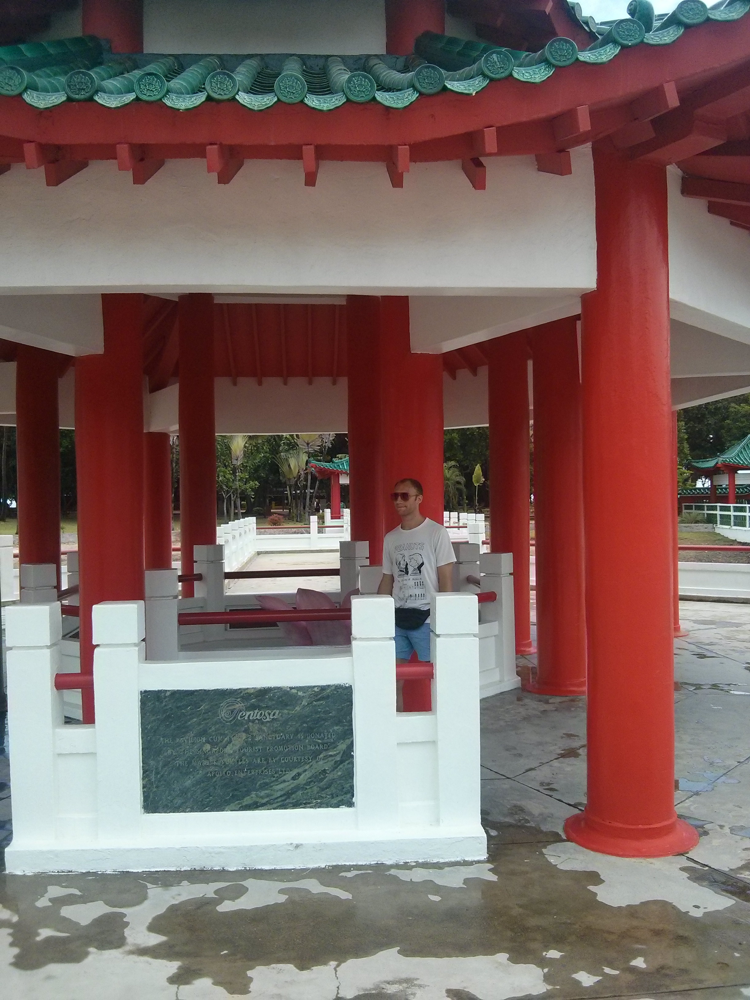
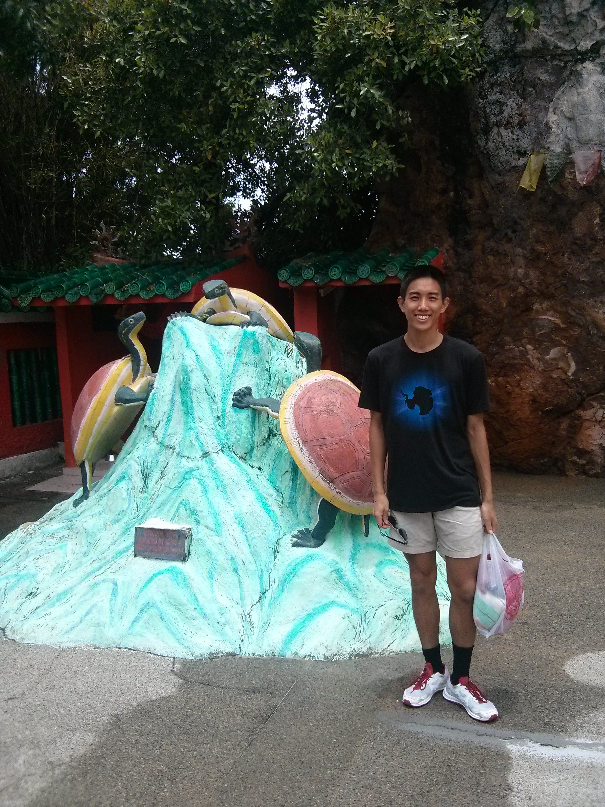
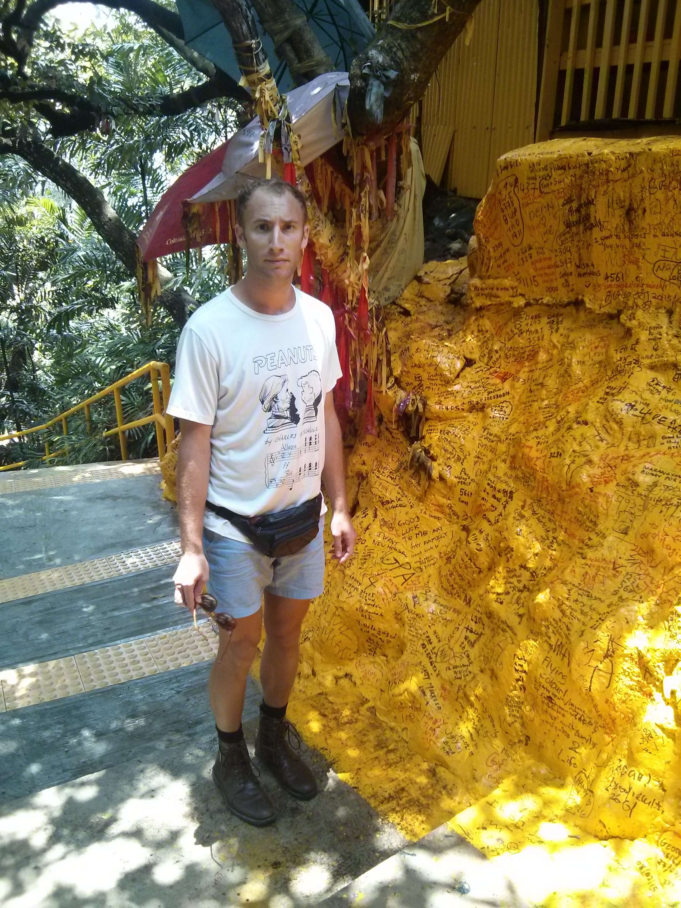
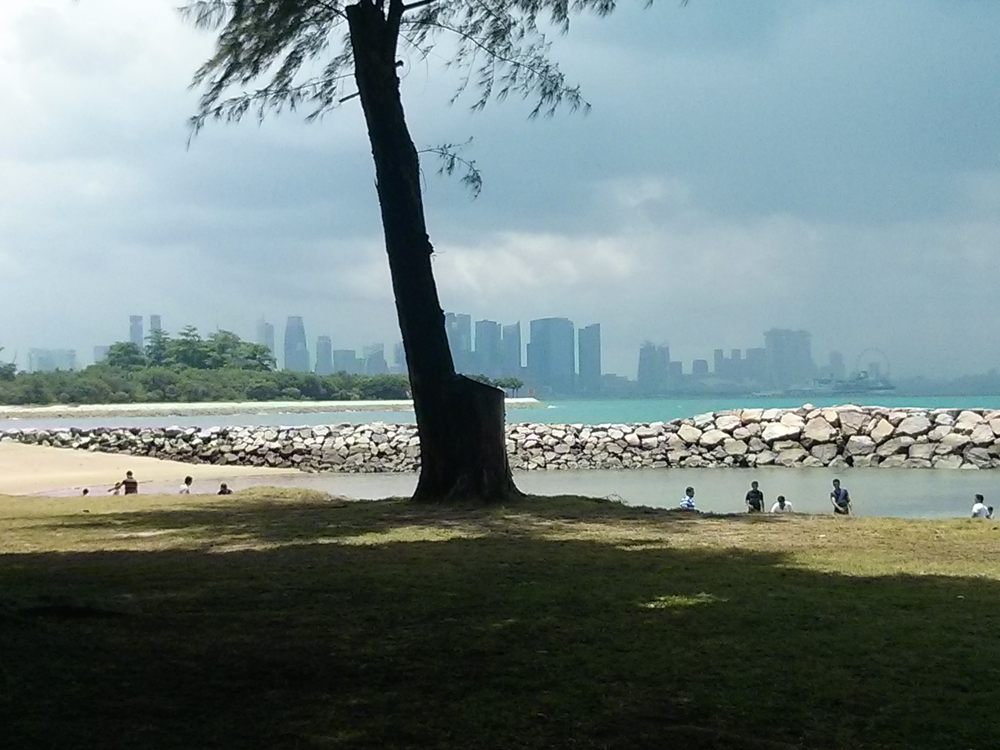

Harbourfront Station (mentioned in our 7km Walk post) is one of the main ferry terminals into the two Indonesian tourist islands, Batam and Bintam. However, there is another terminal at Marina Bay Pier (OK, not sure why I mentiond Harbourfront one at all..). This one takes you to some cute islands nearby locally that are Singaporean land, and are not decked out with all the resorts like Bintam and Batam are: these are St. John's and Kusu Island. There's not much to do on them per se, but for 18 Singaporean Dollars (9 GBP, about 13 USD), you can get a round-trip ferry from Harbourfront-> St. John's -> Kusu -> Harbourfront. It makes a good day trip!
We depart in the morning and head first to St. John's Island. The weather is looking good, and what we do is immediately take the landbridge across to Lazarus island. We hike a little bit to the back of the island and there is this nice, untouched beach with few waves, and it makes a perfect place to just relax in the water and chill. Keep in mind though, this island isn't maintained like the ones in the resort, so there's some trash around left over from previous picnic goers at the beach (I don't understand the need to go to a pristine beach, plus, it's probable that workers had to go in that morning to clean it up to make it look that good). Anyway, the water itself was warm, but once you walk a bit further into the ocean the floor gets muddy. It's strangely a nice sensation on your feet after you've been walking all day. As you can tell, I'm really selling this beach.. If anything, the strong point was the fact that it was mostly private, just a few other people there, and they were all there to relax and get a tan.
Upon nearing the next boarding time to Kusu Island, it starts getting a bit dark, and we can see a storm system coming in. So, we start walking back. But, just our luck, it starts shittin' it down on us and we have to duck under some trees while Southeast Asia does its torrential rain. We eventually find some shelter at some research laboratory that was on the island, and there are a lot of stray cats just doing the same thing and chilling. Guess we were one with the cats.
But, 15 minutes later, the rain clears up, we walk towards the ferry, and catch the boat in time for Kusu island! Apologies for no pictures on St. John's, we but we have a video compilation:
Watch our adventures in St. John's (few pics..) and Kusu IslandKusu Island was similar, with just a few picnic benches set out and a beach to chill on. However, by the time we've gone the beach was already getting more crowded (Sunday, figures). These Tamil folk were playing a game on the beach, Kabbadi, in which you're supposed to wrestle and prevent people from entering back on to your side before they inhale. It's a pretty cool full-on sporting thing to watch.
As it is with Southeast Asia, the one thing on Kusu Island is a temple. And, this temple has a small turtle pond, hence the name of the island, Kusu, which means turtle in dialect. It was a solid temple: had all your bright colors, statues of turtles on rocks, and stairs all around. Good probably for about 30 minutes of a walkaround and then some relaxation afterwards.


There's also a small hill you can climb on Kusu Island that reaches a Kramat shrine at the top of it, which is Malay prayer place. They'll climb the steps and then pray for things like fertility, wealth, etc. You know, all the sensible stuff. It's quite peaceful when you make your way up.

After, you know, reaching our peaceful place or whatever, we went back to catch the ferry, but were early, so went to the beach. As we were on the beach waiting for the next ferry, we see mainland Singapore get absolutely mauled by this dark storm cloud. Since wind here picks up cloud systems pretty fast, within 20 minutes we saw the flyer and Marina Bay Sands be clear, get engulfed by black clouds, then be clear again. Ah, good old Singapore, you never know what kind of weather you're going to get.

For those looking to do a nice, leisure day trip with potential rain and beaches, go to St. John's and Kusu. It's so easy to do, and makes for a good picnic! Oh, and also, bring yourself some water, bought at a convenience store that is *not* the one at the terminal. These islands don't have any shops on them and so you're pretty much on your own with that one. I think the boat might give you little waters, but that's it. Be warned, don't be a starvin' Marvin.